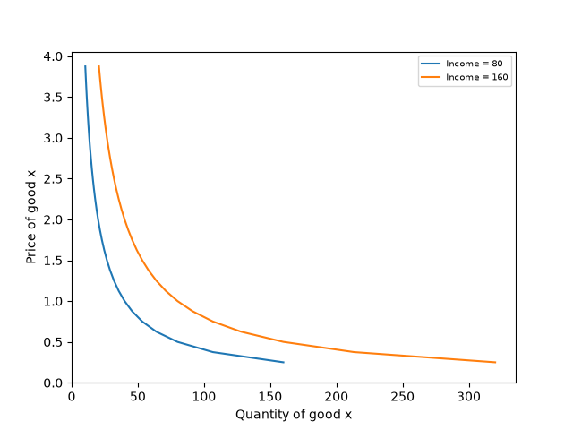
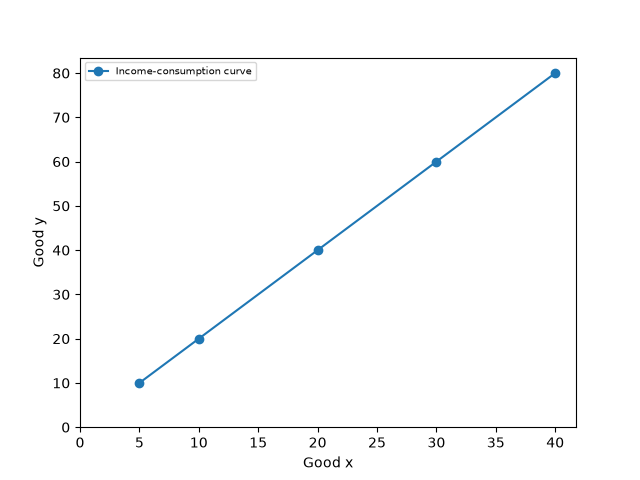
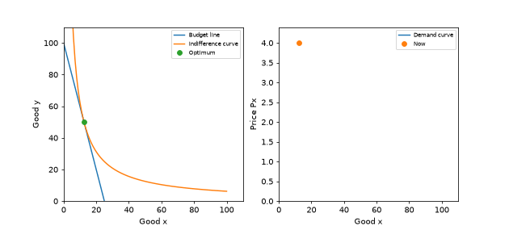

第 3 章: 需要曲線と弾力性¶
3.1 この章の地図¶
前の章で、価格が下がると、予算線の x 切片が右へ動き、最適消費点が動くことを見ました。価格を動かしながら、最適消費点を求めて、財 x の量を価格に対して並べると、需要曲線になります。この章では、需要曲線を導き、価格が変わると需要がどれだけ動くか（価格弾力性）と、所得が変わると需要がどれだけ動くか（所得弾力性）を、計算します。

| 項目 | 内容 |
|---|---|
| 経済学の題材 | 需要曲線の導出、市場需要（横に足す）、価格弾力性（直線の需要曲線・ギッフェン財）、所得弾力性（奢侈品・必需品・下級財）、所得消費曲線 |
| 使う Python の機能 | 関数、関数を引数に渡す（Callable）、数値微分（中心差分）、lambda、テスト（pytest）。NumPy は、この章では使いません |
| 新しく導入するライブラリ | なし |
| 完成形 | demand_x、demand_curve、market_demand、market_demand_curve、linear_demand_quantity、price_elasticity_linear、price_elasticity、elasticity_type、income_elasticity、classify_by_income_elasticity、income_consumption_curve |
| ファイル | 実装: lib/chapter03/demand.py、lib/chapter03/plot.py（図）／テスト: test/chapter03/test_demand.py、test/chapter03/test_plot.py（自分で書くときは、practice/chapter03/ に、同じ名前で作ります） |
| データ | なし（手計算できる小さな例だけ） |
経済学の式とコードの対応¶
| 経済学 | 式 | コード |
|---|---|---|
| 需要曲線 | 価格 P ごとの、最適消費点の x | demand_x(income, px, py)、demand_curve(income, prices, py) |
| 市場需要 | 個人の需要を、同じ価格で、横に足す | market_demand(incomes, px, py) |
| 価格弾力性 | e = −(ΔQ ÷ Q) ÷ (ΔP ÷ P) = −(dQ/dP) · P ÷ Q | price_elasticity(demand, price)（数値微分）、price_elasticity_linear(intercept, slope, price) |
| 弾力性の種類 | |e| > 1 は弾力的、= 1 は単位弾力的、< 1 は非弾力的 | elasticity_type(e) |
| 所得弾力性 | e = (dQ/dm) · m ÷ Q | income_elasticity(demand, income) |
| 財の種類（所得弾力性） | 1 以上は奢侈品、0〜1 は必需品、負は下級財 | classify_by_income_elasticity(e) |
| 所得消費曲線 | 所得を動かしたときの最適消費点 | income_consumption_curve(incomes, px, py) |
前提とする章¶
| できること | 場所 |
|---|---|
| 最適消費点を求める | この連載の第 2 章 |
関数を引数に渡す、lambda を使う |
第 1 シリーズの第 4〜6 章 |
3.2 準備¶
cd apps/micro-basics-programming/python
uv sync
uv run pytest test/chapter03
38 passed
自分でコードを書くときは、practice/chapter03/ に、demand.py と test_demand.py を作ります。第 2 章の関数（optimal_bundle）は、完成形の lib/chapter02/ から import してかまいません（この記事の読み方を参照）。
3.3 予想する¶
効用が U = x·y、所得が 80、財 y の価格が Py = 1 の消費者がいます。紙で、手計算で答えてください。答えは、この節には書いてありません。「プログラミング」の節の「予想の答え合わせ」で、プログラムを動かして確かめます。
- 財 x の価格が 2・1・0.5 のとき、需要量（最適な x）は、それぞれ、いくつですか。需要曲線は、右下がりですか
- 所得 40 の人と、所得 120 の人がいます。Px = 2 での市場需要は、いくつですか
- 直線の需要曲線 Q = 100 − P で、P = 25・50・75 のときの価格弾力性は、それぞれ、いくつですか。この U = x·y の需要の価格弾力性は、いくつですか
- この U = x·y の需要の所得弾力性は、いくつですか。需要が 100 − 0.1m・10√m・0.01m² のとき、所得弾力性は、それぞれ、どの財（奢侈品・必需品・下級財）に当たりますか
3.4 需要曲線と弾力性の考え方¶
需要曲線の導出¶
他の財の価格と所得を一定にして、財 x の価格だけを動かします。価格が下がると、予算線が右へ広がり、最適消費点が動きます。各価格での最適な x をつなぐと、需要曲線です。価格が下がると需要が増えるので、ふつう、右下がりです。
市場需要は、個人の需要を、同じ価格で、横に足し合わせたものです。所得や好みの違う人が増えるほど、市場需要は大きくなります。
価格弾力性¶
価格弾力性は、価格が 1% 変わると、需要量が何% 変わるかを表します。
e = −(需要量の変化率) ÷ (価格の変化率) = −(dQ/dP) × P ÷ Q
- 弾力的（|e| > 1）: 価格が少し動くと、需要量が大きく動く。グラフで緩やかな需要曲線
- 非弾力的（|e| < 1）: 価格が動いても、需要量はあまり動かない。グラフで急な需要曲線
- 直線の需要曲線でも、点の位置で弾力性は変わる（高い価格の側ほど弾力的）
- ギッフェン財は、価格が上がると需要が増える（右上がり）ので、e が負になる（第 4 章で、理由を見ます）
所得弾力性¶
所得弾力性は、所得が 1% 変わると、需要量が何% 変わるかです。
e = (dQ/dm) × m ÷ Q
| 所得弾力性 | 財の種類 | 例 |
|---|---|---|
| 1 以上 | 奢侈品（所得が増えると、同じ割合以上に増やして買う。この連載では、1 ちょうども含める） | 旅行・外食 |
| 0 より大きく 1 未満 | 必需品（増やすが、割合は減る） | 食料 |
| 負 | 下級財（所得が増えると、買う量が減る） | 安い代用品 |
| 0 | 中立財 | — |
所得消費曲線は、所得を動かしたときの、最適消費点をつないだ線です。
3.5 プログラミング¶
Red: 需要曲線のテスト¶
最初のテストを書きます。U = x·y では、財 x の需要は、所得の半分を価格で割った値（m ÷ 2Px）で、手計算できます。
import pytest
from lib.chapter03.demand import (
classify_by_income_elasticity,
demand_curve,
demand_x,
elasticity_type,
income_consumption_curve,
income_elasticity,
linear_demand_quantity,
market_demand,
market_demand_curve,
price_elasticity,
price_elasticity_linear,
)
M, PY = 80, 1
def test_価格が下がると需要は増える() -> None:
assert demand_x(M, 2, PY) == 20
assert demand_x(M, 1, PY) == 40
assert demand_x(M, 0.5, PY) == 80
def test_需要曲線は価格と需要量の組() -> None:
assert demand_curve(M, [2, 1, 0.5], PY) == [(2, 20), (1, 40), (0.5, 80)]
def test_需要曲線は右下がり() -> None:
quantities = [q for _, q in demand_curve(M, [4, 2, 1, 0.5], PY)]
assert quantities == pytest.approx([10, 20, 40, 80])
assert all(a < b for a, b in zip(quantities, quantities[1:], strict=False))
def test_他の財の価格が上がると需要曲線は動かない() -> None:
# コブ・ダグラス型では、財 x の需要は、財 y の価格に依らない
assert demand_x(M, 2, 1) == demand_x(M, 2, 5)
def test_所得が増えると需要曲線は右へ動く() -> None:
assert demand_x(160, 2, PY) > demand_x(80, 2, PY)
assert demand_x(160, 2, PY) == 40
demand_x がまだないので、テストは失敗します（Red）。
テストの import の一覧は、完成形の全関数です。自分で書くときは、関数を 1 つ書くたびに、その名前を、import に足していってかまいません（まだ書いていない関数を import すると、ImportError になり、Green になりません）。
Green: 需要曲線を実装する¶
def demand_x(
income: float, px: float, py: float, a: float = 1.0, b: float = 1.0
) -> float:
"""財 x の需要量（最適消費点の x）。a = b なら、m ÷ (2·Px)。"""
return optimal_bundle(income, px, py, a, b)[0]
def demand_curve(
income: float, prices: Sequence[float], py: float, a: float = 1.0, b: float = 1.0
) -> list[tuple[float, float]]:
"""価格ごとの需要量 (価格, 需要量) の並び。価格を下げると、需要量が増える。"""
return [(p, demand_x(income, p, py, a, b)) for p in prices]
import と補助関数（写すときに足す）
記事の抜粋には、import と、先頭が _ の補助関数・定数を、省いています。完成形のファイルの先頭にある、次の部分を、写してください。
lib/chapter03/demand.py
from collections.abc import Callable, Sequence
from typing import Literal
from lib.chapter01.validation import validate_positive
from lib.chapter02.budget import optimal_bundle
# 数値微分の幅と、弾力性の分類で、同じ値と見なす誤差
_STEP = 1e-6
_TOLERANCE = 1e-6
lib/chapter03/plot.py
from collections.abc import Sequence
import matplotlib.pyplot as plt
from matplotlib.figure import Figure
from lib.chapter03.demand import demand_curve, income_consumption_curve
test/chapter03/test_plot.py
from collections.abc import Sequence
from typing import cast
import pytest
from matplotlib.axes import Axes
from matplotlib.lines import Line2D
from lib.chapter03.plot import plot_demand_curve, plot_income_consumption
第 2 章の optimal_bundle の x を、返すだけです。コブ・ダグラス型では、財 x の需要は、他の財の価格に依りません（2 つ目のテスト）。所得が増えると、需要曲線は、右へ動きます（最後のテスト）。
市場需要¶
def test_市場需要は個人の需要を横に足したもの() -> None:
assert market_demand([80, 80], 2, PY) == 40
assert market_demand([40, 120], 2, PY) == 10 + 30
def test_市場需要曲線は各価格の合計() -> None:
curve = market_demand_curve([40, 120], [2, 1], PY)
assert curve == [(2, 40), (1, 80)]
def market_demand(
incomes: Sequence[float], px: float, py: float, a: float = 1.0, b: float = 1.0
) -> float:
"""市場需要。所得の違う消費者の需要を、同じ価格で、横に足す。"""
return sum(demand_x(m, px, py, a, b) for m in incomes)
def market_demand_curve(
incomes: Sequence[float],
prices: Sequence[float],
py: float,
a: float = 1.0,
b: float = 1.0,
) -> list[tuple[float, float]]:
"""価格ごとの市場需要 (価格, 市場需要) の並び。"""
return [(p, market_demand(incomes, p, py, a, b)) for p in prices]
価格弾力性¶
直線の需要曲線 Q = 100 − P の弾力性は、手計算できます。P = 25 で Q = 75 なので、e = 25 ÷ 75 = 1/3 です。P = 50 で 1、P = 75 で 3 です。同じ直線でも、点の位置で、弾力性が変わります。
def test_直線の需要曲線の弾力性は点の位置で変わる() -> None:
assert price_elasticity_linear(100, -1, 25) == pytest.approx(1 / 3)
assert price_elasticity_linear(100, -1, 50) == pytest.approx(1)
assert price_elasticity_linear(100, -1, 75) == pytest.approx(3)
def test_グラフで緩やかな需要曲線ほど弾力的() -> None:
# 同じ点 (P = 50, Q = 50) を通る 2 本の直線。価格を縦軸にしたグラフで、
# 緩やかなほう（価格が少し動くと、需要量が大きく動く。傾き −2）が、弾力的
gentle = price_elasticity_linear(150, -2, 50)
steep = price_elasticity_linear(75, -0.5, 50)
assert linear_demand_quantity(150, -2, 50) == 50
assert linear_demand_quantity(75, -0.5, 50) == 50
assert gentle == pytest.approx(2)
assert steep == pytest.approx(0.5)
assert gentle > steep
def test_コブ_ダグラス型の価格弾力性はいつも1() -> None:
for price in (0.5, 1, 2, 4):
e = price_elasticity(lambda p: demand_x(M, p, PY), price)
assert e == pytest.approx(1, rel=1e-6)
_STEP = 1e-6
def linear_demand_quantity(intercept: float, slope: float, price: float) -> float:
"""直線の需要曲線 Q = 切片 + 傾き × P。需要量は、負にならない。"""
return max(0.0, intercept + slope * price)
def price_elasticity_linear(intercept: float, slope: float, price: float) -> float:
"""直線の需要曲線の価格弾力性 e = −傾き × P ÷ Q。点の位置で変わる。"""
quantity = linear_demand_quantity(intercept, slope, price)
validate_positive(quantity, "需要量が 0 のとき、価格弾力性は求められない")
return -slope * price / quantity
def price_elasticity(
demand: Callable[[float], float], price: float, step: float = _STEP
) -> float:
"""価格弾力性 e = −(dQ/dP) × P ÷ Q（中心差分による数値微分）。"""
validate_positive(price, "価格は、正にする")
quantity = demand(price)
validate_positive(quantity, "需要量が 0 のとき、価格弾力性は求められない")
slope = (demand(price + step) - demand(price - step)) / (2 * step)
return -slope * price / quantity
def elasticity_type(
elasticity: float,
) -> Literal["単位弾力的", "弾力的", "非弾力的"]:
"""弾力性の大きさで、弾力的（> 1）・単位弾力的（= 1）・非弾力的（< 1）に分ける。"""
size = abs(elasticity)
if abs(size - 1) <= _TOLERANCE:
return "単位弾力的"
return "弾力的" if size > 1 else "非弾力的"
price_elasticity は、需要の式が分からなくても、需要を返す関数を渡せば、弾力性を求めます。価格の前後 ±1e-6 の需要から、傾きを求める中心差分（数値微分）です。需要量が 0 のとき（0 で割れない）と、価格が 0 以下のときは、エラーにします。
所得弾力性と財の種類¶
所得弾力性も、同じ数値微分で求めます。符号と大きさから、財の種類を決めます。
def test_所得弾力性はコブ_ダグラス型で1() -> None:
e = income_elasticity(lambda m: demand_x(m, 2, PY), 80)
assert e == pytest.approx(1, rel=1e-6)
def test_所得弾力性の符号は財の種類を表す() -> None:
assert income_elasticity(lambda m: 100 - 0.1 * m, 500) == pytest.approx(-1)
assert income_elasticity(lambda m: 10 * m**0.5, 100) == pytest.approx(0.5)
assert income_elasticity(lambda m: 0.01 * m**2, 100) == pytest.approx(2)
assert income_elasticity(lambda m: 30.0, 100) == pytest.approx(0, abs=1e-9)
def test_所得弾力性による財の分類() -> None:
assert classify_by_income_elasticity(2) == "奢侈品"
assert classify_by_income_elasticity(1) == "奢侈品"
assert classify_by_income_elasticity(0.5) == "必需品"
assert classify_by_income_elasticity(0) == "中立財"
assert classify_by_income_elasticity(-1) == "下級財"
_TOLERANCE = 1e-6
def income_elasticity(
demand: Callable[[float], float], income: float, step: float = _STEP
) -> float:
"""所得弾力性 e = (dQ/dm) × m ÷ Q（中心差分による数値微分）。"""
validate_positive(income, "所得は、正にする")
quantity = demand(income)
validate_positive(quantity, "需要量が 0 のとき、所得弾力性は求められない")
slope = (demand(income + step) - demand(income - step)) / (2 * step)
return slope * income / quantity
def classify_by_income_elasticity(
elasticity: float,
) -> Literal["下級財", "中立財", "奢侈品", "必需品"]:
"""所得弾力性で財を分ける。1 以上は奢侈品、0〜1 は必需品、負は下級財。"""
if elasticity < -_TOLERANCE:
return "下級財"
if elasticity <= _TOLERANCE:
return "中立財"
return "奢侈品" if elasticity >= 1 - _TOLERANCE else "必需品"
def income_consumption_curve(
incomes: Sequence[float], px: float, py: float, a: float = 1.0, b: float = 1.0
) -> list[tuple[float, float]]:
"""所得消費曲線。所得を動かしたときの、最適消費点 (x, y) の並び。"""
return [optimal_bundle(m, px, py, a, b) for m in incomes]
数値微分の結果には、微小な誤差があります。この章の需要の所得弾力性は、理論値が 1 ですが、数値微分では 0.9999999974752427 になり、1 にわずかに届きません。そのまま「1 以上か」で判定すると、必需品に分類されてしまいます。境界の判定（1 以上は奢侈品、0 は中立財）では、許容誤差（1e-6）を持たせます（test_所得弾力性の分類の許容誤差は1e_6）。
予想の答え合わせ¶
予想した答えを、プログラムで確かめます。
このスクリプトは、完成形（
lib/）を読みます。自分のコードで確かめるときは、import を、from practice.chapterNN...に書き換えてください。
from lib.chapter03.demand import (
classify_by_income_elasticity,
demand_x,
income_elasticity,
market_demand,
price_elasticity,
price_elasticity_linear,
)
for price in (2, 1, 0.5):
print("Px =", price, "の需要量:", demand_x(80, price, 1))
print("市場需要 (所得 40 と 120, Px = 2):", market_demand([40, 120], 2, 1))
for price in (25, 50, 75):
print("Q = 100 − P の P =", price, "の価格弾力性:", round(price_elasticity_linear(100, -1, price), 4))
print("コブ・ダグラス型の価格弾力性:", round(price_elasticity(lambda p: demand_x(80, p, 1), 2), 4))
e = income_elasticity(lambda m: demand_x(m, 2, 1), 80)
print("所得弾力性:", round(e, 4), classify_by_income_elasticity(e))
for name, f, m in (
("100 − 0.1m", lambda m: 100 - 0.1 * m, 500),
("10√m", lambda m: 10 * m**0.5, 100),
("0.01m²", lambda m: 0.01 * m**2, 100),
):
e = income_elasticity(f, m)
print(name, "の所得弾力性:", round(e, 4), classify_by_income_elasticity(e))
Px = 2 の需要量: 20.0
Px = 1 の需要量: 40.0
Px = 0.5 の需要量: 80.0
市場需要 (所得 40 と 120, Px = 2): 40.0
Q = 100 − P の P = 25 の価格弾力性: 0.3333
Q = 100 − P の P = 50 の価格弾力性: 1.0
Q = 100 − P の P = 75 の価格弾力性: 3.0
コブ・ダグラス型の価格弾力性: 1.0
所得弾力性: 1.0 奢侈品
100 − 0.1m の所得弾力性: -1.0 下級財
10√m の所得弾力性: 0.5 必需品
0.01m² の所得弾力性: 2.0 奢侈品
- 1 つ目の問い: 需要量は、Px = 2 で 20、1 で 40、0.5 で 80 です。価格が下がると、需要が増える右下がりです
- 2 つ目の問い: 市場需要は、所得 40 の人が 10、所得 120 の人が 30 で、合計 40 です（横に足す）
- 3 つ目の問い: 直線の需要曲線の弾力性は、P = 25 で 1/3（非弾力的）、50 で 1（単位弾力的）、75 で 3（弾力的）です。高い価格の側ほど、弾力的です。U = x·y の需要の弾力性は、どの価格でも 1 です
- 4 つ目の問い: U = x·y の所得弾力性は 1（奢侈品の境界。需要が所得に比例する）です。100 − 0.1m は −1（下級財）、10√m は 0.5（必需品）、0.01m² は 2（奢侈品）です
図¶
（図の関数の import と補助関数（_POINTS・_style など）は、上の折りたたみ「import と補助関数」の、plot.py と test_plot.py の項目にあります。）
需要曲線を描く関数と、座標のテストです。横軸が数量、縦軸が価格であること、右下がりであること、所得が増えると右へ動くことを、確かめます。
描画のテストと実装（後回しにしても、学習は成り立ちます）
def xs(line: Line2D) -> list[float]:
return [float(v) for v in cast(Sequence[float], line.get_xdata())]
def ys(line: Line2D) -> list[float]:
return [float(v) for v in cast(Sequence[float], line.get_ydata())]
def demand() -> Axes:
return plot_demand_curve([80, 160], [4, 2, 1, 0.5], 1).axes[0]
def test_需要曲線の図は所得ごとに1本ずつ() -> None:
ax = demand()
assert [line.get_label() for line in ax.lines] == ["Income = 80", "Income = 160"]
def test_需要曲線は横軸が数量で縦軸が価格() -> None:
ax = demand()
first = ax.lines[0]
assert xs(first) == pytest.approx([10, 20, 40, 80])
assert ys(first) == [4, 2, 1, 0.5]
assert ax.get_xlabel() == "Quantity of good x"
assert ax.get_ylabel() == "Price of good x"
def test_所得が増えると需要曲線は右へ動く() -> None:
low, high = demand().lines
assert all(
h == pytest.approx(2 * lo) for lo, h in zip(xs(low), xs(high), strict=True)
)
assert ys(low) == ys(high)
def plot_demand_curve(
incomes: Sequence[float], prices: Sequence[float], py: float
) -> Figure:
"""需要曲線を、所得ごとに描く（横軸が数量、縦軸が価格）。所得が増えると、右へ動く。"""
fig, ax = plt.subplots()
for income in incomes:
points = demand_curve(income, prices, py)
ax.plot(
[q for _, q in points], [p for p, _ in points], label=f"Income = {income}"
)
ax.set_xlabel("Quantity of good x")
ax.set_ylabel("Price of good x")
ax.set_xlim(left=0)
ax.set_ylim(bottom=0)
ax.legend(fontsize="x-small")
plt.close(fig)
return fig
所得消費曲線は、所得を動かしたときの、最適消費点をつないだ線です。U = x·y では、原点を通る直線（財 x の量の 2 倍が財 y の量）になります。

描画のテストと実装（後回しにしても、学習は成り立ちます）
def consumption() -> Axes:
return plot_income_consumption([40, 80, 160], 2, 1).axes[0]
def test_所得消費曲線の図() -> None:
ax = consumption()
line = ax.lines[0]
assert line.get_label() == "Income-consumption curve"
assert xs(line) == pytest.approx([10, 20, 40])
assert ys(line) == pytest.approx([20, 40, 80])
assert ax.get_xlabel() == "Good x"
assert ax.get_ylabel() == "Good y"
assert ax.get_xlim()[0] == 0
assert ax.get_ylim()[0] == 0
assert ax.get_legend() is not None
def plot_income_consumption(incomes: Sequence[float], px: float, py: float) -> Figure:
"""所得消費曲線。所得を動かしたときの、最適消費点をつなぐ。"""
bundles = income_consumption_curve(incomes, px, py)
fig, ax = plt.subplots()
ax.plot(
[x for x, _ in bundles],
[y for _, y in bundles],
"o-",
label="Income-consumption curve",
)
ax.set_xlabel("Good x")
ax.set_ylabel("Good y")
ax.set_xlim(left=0)
ax.set_ylim(bottom=0)
ax.legend(fontsize="x-small")
plt.close(fig)
return fig
ノートブックで試す¶
数字を書き換えて、結果と図が変わるのを、手軽に確かめられます。apps/micro-basics-programming/python/notebooks/ch03_demand_curve_and_elasticity.ipynb を開き、「Parameters」のセルの数字（所得、価格、直線の需要の切片と傾き）を書き換えて、上から順に実行します。起動は、アプリのディレクトリで uv run --with jupyterlab jupyter lab notebooks/ です。
動かして見る¶
価格が 4 から 1 へ下がります。左: 予算線の x 切片が右へ伸び、最適点が動きます。右: 最適点の x と価格をつなぐと、需要曲線ができます。

このアニメーションは、lib/animations/ の関数で作っています（uv run python -m tools.render_animations で、GIF を書き出します）。写経は、不要です。動きを見て、式と図の対応を、確かめてください。
実行結果¶
uv run pytest test/chapter03
38 passed
3.6 規則で言うと¶
- 需要曲線は、価格を動かしたときの、最適消費点を並べたものである。 他の財の価格と所得は、一定とする
- 弾力性は、変化率の比である。 傾きではなく、点の位置（価格と数量）にも依る
- 数値微分の結果は、誤差を含む。 境界の判定には、許容誤差を使う
混同しやすい点を、表にまとめます。
| 混同しやすい点 | 違い |
|---|---|
| 需要の変化と、需要量の変化 | 価格が変わると、需要量が動く（曲線の上の動き）。所得や他の財の価格が変わると、需要（曲線そのもの）が動く |
| 傾きと、弾力性 | 傾きは、単位に依る（円・個）。弾力性は、変化率の比で、単位に依らない。同じ直線でも、点で弾力性が変わる |
| 緩やかと、急 | 価格を縦軸にしたグラフで、緩やかな曲線は弾力的、急な曲線は非弾力的 |
| 奢侈品・必需品・下級財 | 所得弾力性で決まる。1 以上は奢侈品、0〜1 は必需品、負は下級財 |
このモデルが成り立たない場面¶
- コブ・ダグラス型は、弾力性が、いつも 1 です。 実際の財では、価格弾力性は、財によって、大きく違います
- 需要曲線は、他の条件を一定にした、仮想の関係です。 実際の価格と数量のデータは、需要と供給が、同時に動いた結果で、需要曲線を直接、見せてくれません
- 数値微分は、近似です。 需要が、なめらかに動かない（段差のある）ときは、使えません
3.7 練習問題¶
| 種類 | 問題 |
|---|---|
| 想起 | 本文を閉じて、demand_x の最初のテスト（所得 80、Py = 1 で、Px = 2・1・0.5 の需要量が 20・40・80）を書いてください |
| 生成 | 解説を見る前に、総支出（価格 × 需要量）を返す expenditure(income, px, py) を、テストから書いてください。U = x·y では、価格弾力性が 1 なので、価格が変わっても、総支出は変わりません。本当ですか |
| 多様 | 需要の式を Q = 150 − 2P に変えます。P = 50 の価格弾力性は、いくつですか。先に予想してから、確かめてください。Q = 100 − P の P = 50 の弾力性（1）と、比べてください |
| 交互 | 第 1 シリーズの第 3 章のリスト内包表記で、所得 20・40・80・160 の所得消費曲線の点を、一度に求めてください。どの点も、y が x の 2 倍ですか |
解答（先に自分で取り組んでから、開いてください）
想起:
def test_需要量は価格が下がると増える() -> None:
assert [demand_x(80, p, 1) for p in (2, 1, 0.5)] == [20, 40, 80]
生成: 総支出は、価格に、需要量を掛けます。
def expenditure(income, px, py):
return px * demand_x(income, px, py)
def test_総支出は価格が変わっても一定() -> None:
assert [expenditure(80, p, 1) for p in (4, 2, 1, 0.5)] == [40, 40, 40, 40]
価格弾力性が 1 なら、価格が下がると需要量が同じ割合で増え、総支出は変わりません。 どの価格でも、所得の半分（40）です。
多様: Q = 150 − 2P の P = 50 では、Q = 50 なので、e = 2 × 50 ÷ 50 = 2 です。同じ点 (P = 50, Q = 50) を通る Q = 100 − P の e = 1 より、大きく（弾力的）、グラフでは、緩やかな曲線です。
def test_緩やかな需要曲線ほど弾力的() -> None:
assert price_elasticity_linear(150, -2, 50) == pytest.approx(2)
assert price_elasticity_linear(100, -1, 50) == pytest.approx(1)
交互:
def test_所得消費曲線の点はyがxの2倍() -> None:
curve = income_consumption_curve([20, 40, 80, 160], 2, 1)
assert curve == [(5, 10), (10, 20), (20, 40), (40, 80)]
assert all(y == 2 * x for x, y in curve)
3.8 振り返り¶
- うまくいったこと:
- 詰まったこと:
- 次に試すこと:
3.9 まとめ¶
- 需要曲線は、価格を動かしながら求めた、最適消費点の x を、価格に対して並べたもの。ふつう右下がりで、所得が増えると右へ動く。市場需要は、個人の需要を、横に足したもの
- 価格弾力性は、需要量の変化率を、価格の変化率で割った値。緩やかな曲線ほど弾力的で、直線の需要曲線でも、点の位置で変わる。コブ・ダグラス型では、いつも 1
- 所得弾力性で、財を、奢侈品（1 以上）・必需品（0〜1）・下級財（負）に分ける。所得消費曲線は、所得を動かしたときの最適消費点
- 数値微分は、中心差分で求め、境界の判定には、許容誤差を使う
次の章では、価格が変わったときの需要の変化を、代替効果と所得効果に分けます（スルツキー分解）。これで、下級財とギッフェン財の違い（右上がりの需要曲線になりうるのは、ギッフェン財だけです）が、なぜ生じるかが分かります。第 1 部の到達チェックも、行います。